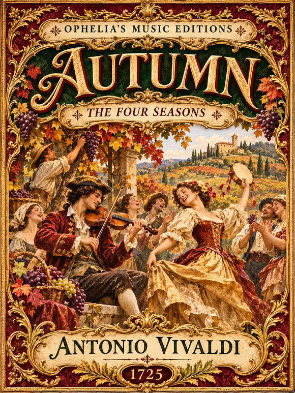

L’autunno (Autumn)
Antonio Vivaldi (1678–1741) · The Four Seasons · Concerto No. 3 in F major · Op. 8, No. 3 · RV 293 · First published 1725.
Everything is free. Hear all three movements in their original order and read the complete orchestral score. Our new cover illustrates an Italian harvest celebration, in the spirit of Vivaldi’s concerto; it is an original modern illustration, not a historical reproduction.
Ophelia’s illustrated edition

Original historically inspired artwork · Italian harvest · 1725.
Listen · All three movements
I. Allegro · The Modena Chamber Orchestra. On finishing, the player advances to movement II.
Performance: The Modena Chamber Orchestra · three movements, 2019 audio files from Musopen, shared on Wikimedia Commons under the Public Domain Mark. Listen or read source/rights information ↗.
Autumn · All three movements · 23 pages
The complete five-part conductor score below is a modern 2010 typesetting from the Mutopia Project, offered under Creative Commons Attribution–ShareAlike 3.0. It includes the final double barline at the end of the third movement.
If the embedded score is blank or blocked by your browser, use the direct score PDF or the Google viewer link above. External PDF previews depend on their host and browser.
1725 historical source: View the original first-edition orchestral partbooks, Amsterdam, Michel-Charles Le Cène, 1725, digitized from Bibliothèque nationale de France copies ↗. The 1725 instrument parts are separate from the readable 2010 full score above, and are marked public domain.
Full-score provenance: Mutopia Project, 2010, based on a performers’ facsimile; attribution and reuse information appears at the end of the PDF. Mutopia publication record ↗.
Audio provenance: The Modena Chamber Orchestra, all three movements; public-domain-marked Wikimedia Commons recordings. Credits are linked by the player and on the Music Room listing.